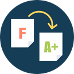

<!--
  Generated template for the SubjectPage page.

  See http://ionicframework.com/docs/components/#navigation for more info on
  Ionic pages and navigation.
-->
<ion-header>

  <ion-navbar>
    <ion-title>SUBJECT</ion-title>
  </ion-navbar>

</ion-header>


<ion-content padding>
  <ion-item>
    <ion-thumbnail item-start>
      
    </ion-thumbnail>
    <h2>Proffesor</h2>
    <p>LOBOS MARTIN, JUAN</p>
  </ion-item>
  <ion-item>
    <ion-thumbnail item-start>
      
    </ion-thumbnail>
    <h2>Final Grade</h2>
    <p>10</p>
  </ion-item>
  <ion-item>
    <ion-thumbnail item-start>
      
    </ion-thumbnail>
    <h2>Attendance</h2>
    <p>View your assistance</p>
    <button ion-button clear item-end color="primary" (click)="subjects()" >Go</button>
  </ion-item>
</ion-content>
